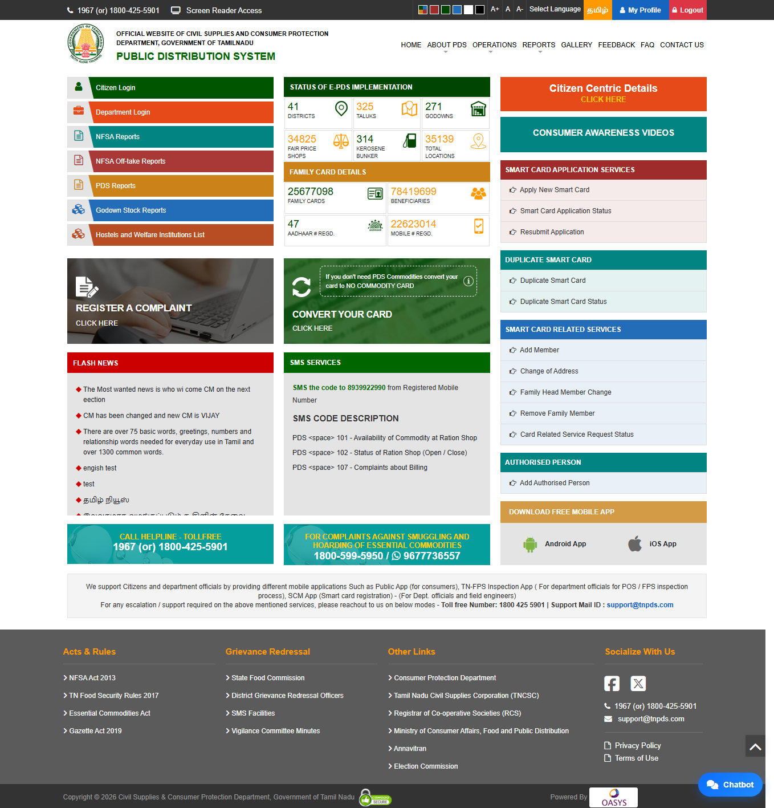
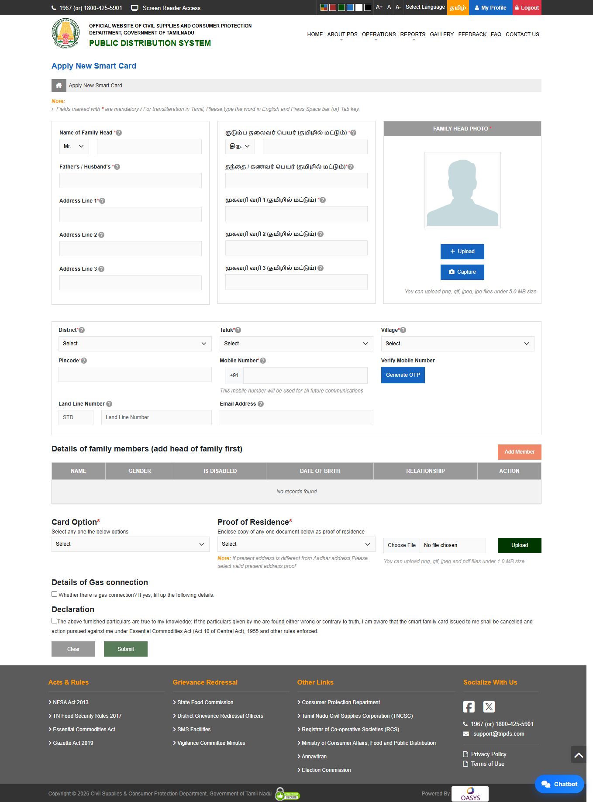
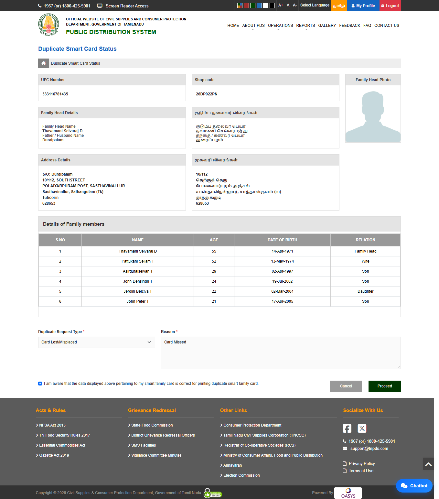
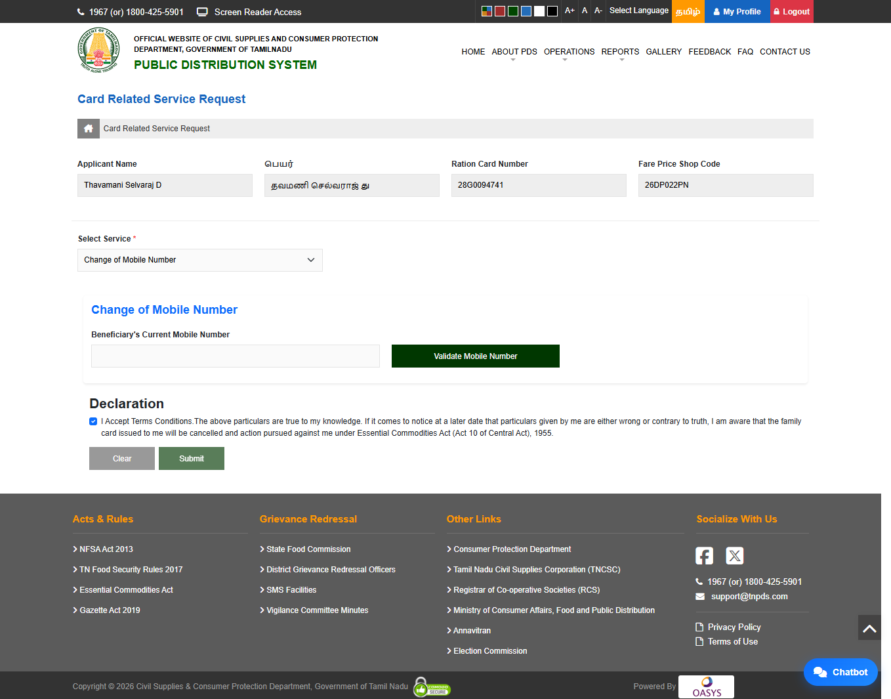
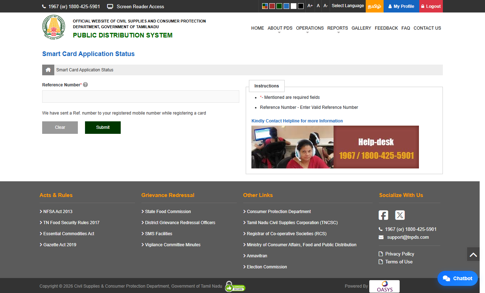
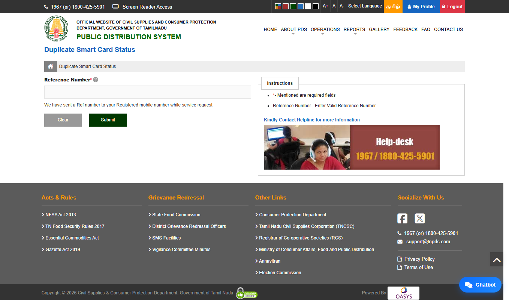
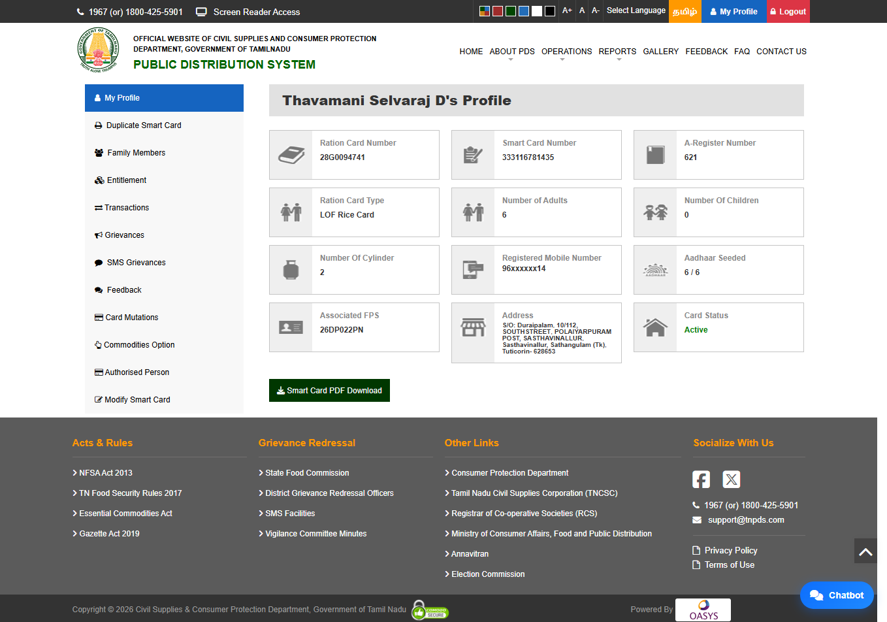
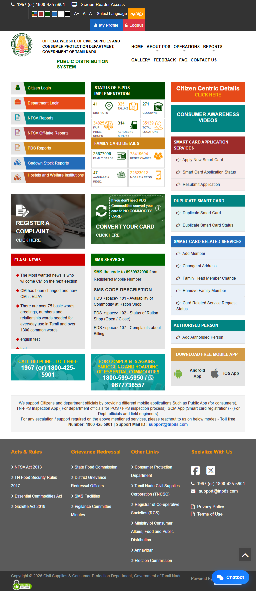
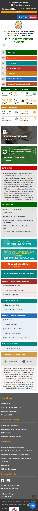

Tamil Nadu Public Distribution System
Designing a clearer citizen-facing experience for essential government services.
UI/UX design for the TNPDS Public Portal, focused on service discovery, information architecture, content hierarchy, usability and responsive interfaces.
Client
TNPDS
Platform
Public Portal
Role
UI/UX Designer
Focus
UX · Responsive UI

TNPDS Public Portal — the citizen-facing entry point for Public Distribution System services and information.
Citizen-facing
Public service experience
Service-led
Government services & access
Information-rich
Content & service discovery
Responsive
Web experience across devices
The brief
The Tamil Nadu Public Distribution System is a citizen-facing digital platform that brings Public Distribution System services and information together within an online experience.
My primary UI/UX contribution focused on the Public Portal, with emphasis on service discovery, information architecture, content hierarchy, usability and responsive citizen-facing interfaces.
The work involved considering how users discover services, understand information, navigate between sections and access service-related information within the portal.
The challenge
A public-service portal brings together different types of information and services that need to remain understandable to users with different needs and levels of familiarity with digital systems.
The challenge was to organise this breadth of information into an experience where citizens could identify relevant services and understand the information presented to them.
Service discovery
Users need clear entry points to understand what services are available and where to begin.
Information hierarchy
Service information, supporting content and portal resources need clear relationships so users can scan and understand what is relevant.
Different user needs
Some visitors arrive looking for information while others need to access a specific service. The interface therefore needs to support both exploration and task-oriented access.
Responsive access
The Public Portal needs to remain usable across different screen sizes while preserving its core information hierarchy and service access.
Understanding the Public Portal
The portal was considered as a connected citizen experience rather than a collection of unrelated pages. Navigation, service access and supporting information need to work together so users can move between different areas without losing context.
Design strategy
The design approach focused on creating a clearer relationship between services, information and user actions while keeping the interface consistent across the Public Portal.
01
Service clarity
Create clearer entry points for citizen-facing services.
02
Information hierarchy
Structure information so important content is easier to scan.
03
Responsive continuity
Preserve the core experience across different screen sizes.
Public Portal experience
The Public Portal brings together citizen services and supporting information within a common digital experience. My focus was on the interface structure, visual hierarchy, service access and responsive presentation of this citizen-facing experience.

Public Portal — desktop home and service discovery experience.
Service discovery
Citizen services need clear entry points and understandable information before users begin a task. The selected service screens show how individual service experiences sit within the broader portal structure.

New Smart Card service.

Duplicate Smart Card service.
Service request experience
Service-request interfaces need to keep information, context and available actions understandable as users move through the task.

Service Request — primary citizen service workflow.
.png)
.png)
.png)
.png)
Supporting states from the service-request experience.
Status and service information
Status-oriented screens help users understand where they are within a service journey and what information is available about the current request.

Smart Card status experience.

Duplicate Smart Card status.
Profile and citizen information
Profile-related interfaces provide a more personal context within the portal while keeping information and available actions organised.

Profile and citizen information experience.
Responsive experience
The Public Portal was considered across desktop, tablet and mobile contexts. The responsive work focuses on preserving the core service structure while adapting the interface to the available screen space.
Desktop
Tablet

Mobile experience

Mobile adaptation of the Public Portal experience.
Key design decisions
Information architecture
Services, information and navigation were considered as connected parts of the Public Portal rather than isolated pages.
Service discovery
Clear service entry points help citizens recognise available options and identify where to begin.
Content hierarchy
Typography, spacing, grouping and visual emphasis help establish clearer relationships between primary and supporting information.
Responsive experience
The interface adapts across desktop, tablet and mobile while preserving the same core service structure and intent.
Consistent interaction patterns
Consistent navigation, controls, information structures and service interactions help create a more predictable citizen-facing experience.
Good citizen-facing UX makes complex government services easier to understand without hiding the information users need.
Reflection
Working on the TNPDS Public Portal strengthened my approach to designing government services around clarity, information hierarchy and service discovery.
The project reinforced the importance of designing the user-facing experience so citizens do not need to understand the complexity behind the system to find the information or service they need.
It also strengthened my experience in responsive interface design and creating consistent interaction patterns across a broad citizen-facing platform.
Interested in creating a clearer digital experience? Get in touch — I'd be happy to discuss your product, platform or service.